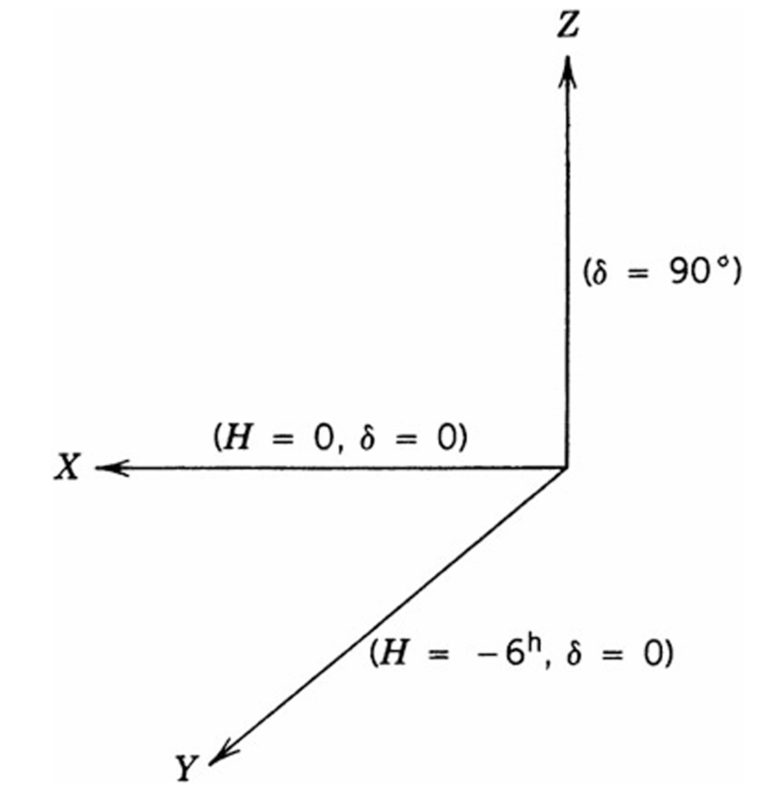
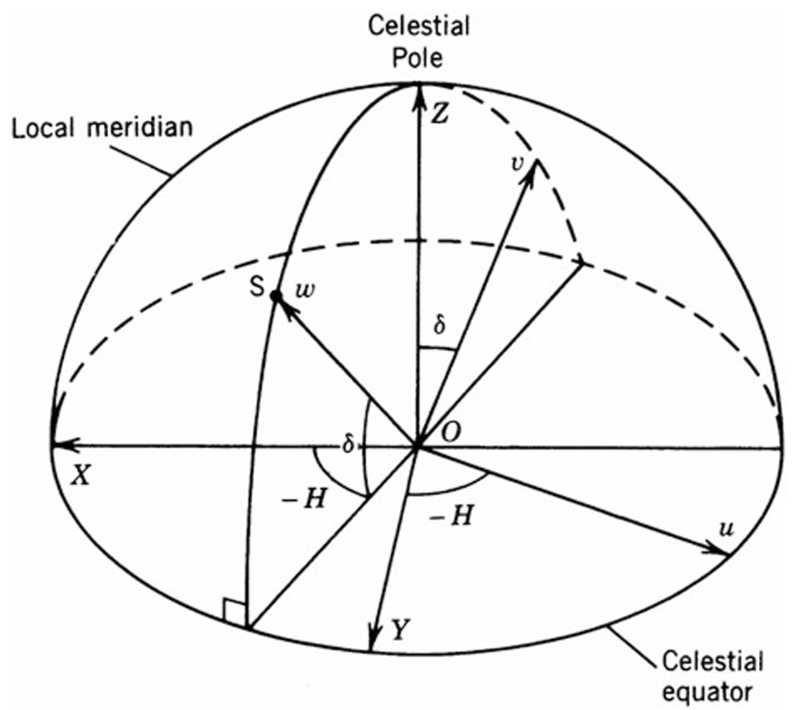
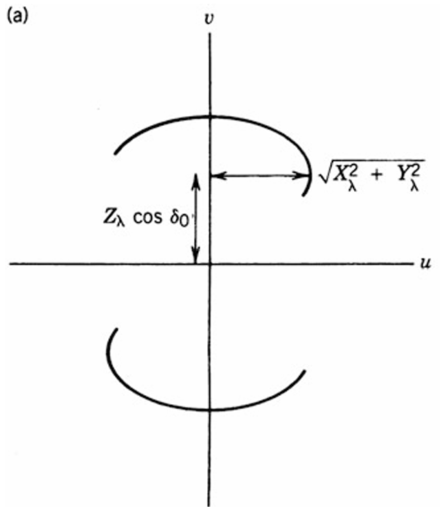
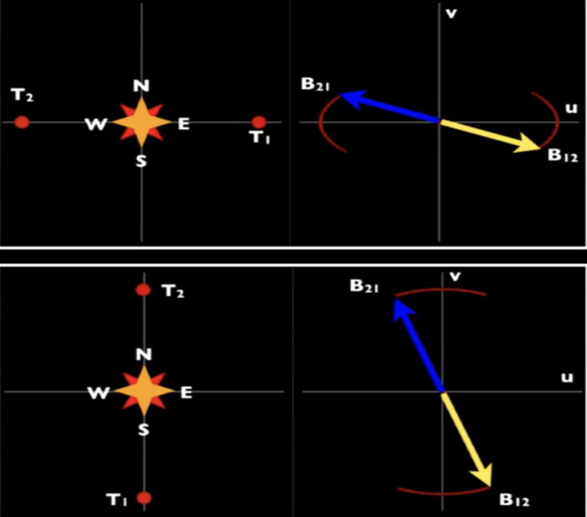
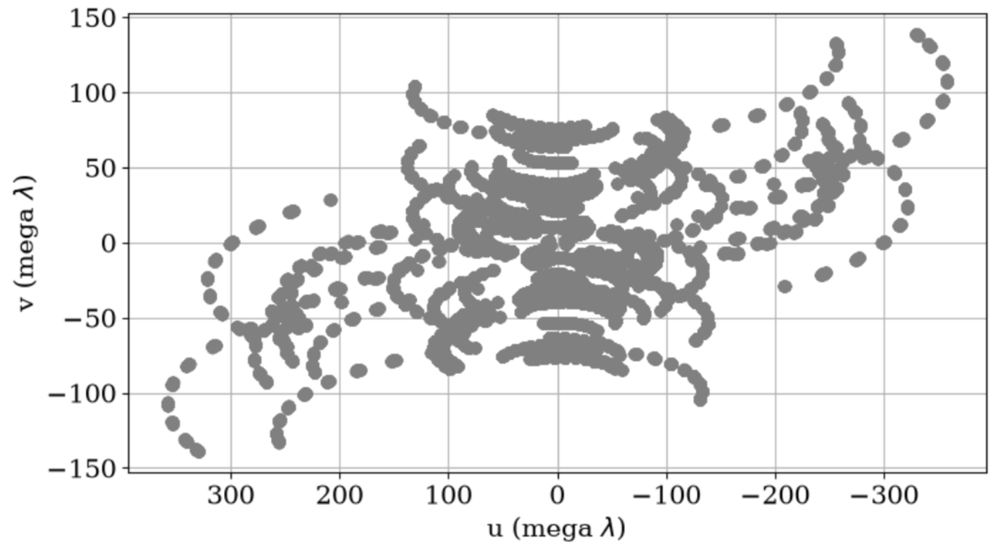
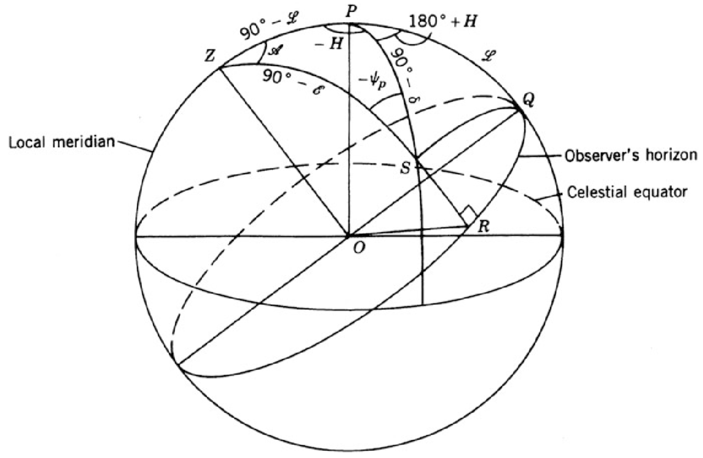

1. 안테나 공간 좌표계(Antenna Spacing Coordinates)
- 전파 망원경의 배열(array) 내 안테나들의 상대적 위치를 지정하기 위해 아래 그림과 같은 오른손 좌표계(right-handed Cartesian coordinate system) 를 이용한다.

- \(Y\) 축의 경우, 동쪽을 향하고, \(Z\) 축은 북극 방향을 향한다. 각 좌표를 시간각(hour angle) \(H\) 와 적위 \(\delta\) 의 관점에서 바라보면 좌표 \((X, Y, Z)\) 는 각각 \((H=0,\ \delta=0)\), \((H=-6^{\mathrm h},\ \delta=0)\), \((\delta=90^\circ)\) 방향을 향해 측정된다.
- 시간각(hour angle): 자오선에서 시계방향으로 측정되는 값이다.
- 만약 \((X_\lambda,Y_\lambda,Z_\lambda)\) 가 \((X,Y,Z)\) 좌표계에서 \(\mathbf{D}_\lambda\) 의 성분이라면 \((u,v,w)\) 성분은 다음과 같이 주어진다:
- 단, \(X_{\lambda} = X / \lambda\) 는 두 안테나 사이의 \(X\) 방향 간격을 파장 단위로 나타낸 것이며, \(\mathbf{D}_\lambda\) baseline 벡터(vector) \(\mathbf{D}\) 를 파장 \(\lambda\) 로 나눈 값이다.
\[ \begin{bmatrix} u\\ v\\ w \end{bmatrix} = \begin{bmatrix} \sin H & \cos H & 0\\ -\sin\delta\cos H & \sin\delta\sin H & \cos\delta\\ \cos\delta\cos H & -\cos\delta\sin H & \sin\delta \end{bmatrix} \begin{bmatrix} X_\lambda\\ Y_\lambda\\ Z_\lambda \end{bmatrix}. \tag{1.1} \]
- 식 (1.1)에서 \((H,\delta)\) 는 phase reference position의 시간각과 적위를 나타낸다.
- 변환 행렬의 원소들은 \((X,Y,Z)\) 축에 대한 \((u,v,w)\) 축의 방향 코사인(direction cosines)이며, 아래의 그림에서 유도된다.

- baseline 벡터를 나타내는 방법은 baseline의 길이 \(D\) 와 baseline 방향을 무한히 연장하여 천구와 만나는 임의의 좌표를 시간각과 적위 \((h,d)\) 를 이용하여 나타내는 것이다. 이 경우, \((X,Y,Z)\) 좌표계 좌표는 다음과 같이 주어진다:
\[ \begin{bmatrix} X\\ Y\\ Z \end{bmatrix} = D \begin{bmatrix} \cos d \cos h\\ -\cos d \sin h\\ \sin d \end{bmatrix}. \tag{1.2} \]
- 그리고 \((u,v,w)\) 좌표계에서 좌표는 식 (1.1)과 (1.2)로부터 다음과 같이 얻어진다:
\[ \begin{bmatrix} u\\ v\\ w \end{bmatrix} = D_\lambda \begin{bmatrix} \cos d\sin(H-h)\\ \sin d\cos\delta-\cos d\sin\delta \cos(H-h)\\ \sin d\sin\delta+\cos d\cos\delta \cos(H-h) \end{bmatrix}. \tag{1.3} \]
- 식 (1.1) 또는 식 (1.3)을 살펴보면, projected 안테나 간격 성분 \(u\) 와 \(v\) 의 자취는 시간각을 변수로 하는 타원을 정의한다. phase reference position의 시간각과 적위를 \((H_0,\delta_0)\) 라고 하면, 식 (1.1)에서 다음을 얻을 수 있다:
\[ u^2 + \left( \frac{v-Z_\lambda\cos\delta_0} {\sin\delta_0} \right)^2 = X_\lambda^2+Y_\lambda^2. \tag{1.4} \]
- \((u, v)\) 평면(plane)에서 식 (1.4)는 장반경이 \(\sqrt{X_\lambda^2+Y_\lambda^2}\) 이고, 단반경이 \(\sin\delta_0\sqrt{X_\lambda^2+Y_\lambda^2}\) 인 타원을 정의한다. 이를 그림으로 나타내면 아래와 같다.

- complex visibility는 \(\mathcal{V}(-u,-v)=\mathcal{V}^{*}(u,v)\) 이므로, 하나의 관측은 항상 두 개의 호에 대한 측정을 동시에 제공한다.
- 단, 이 두 호는 \(Z_\lambda=0\) 인 경우에만 동일한 타원의 일부가 된다.
2. UV-Plane
- 천체 입장에서 망원경의 분포를 보면 다양한 점으로 찍힌다. 이때, 각 점은 complex visibility에 해당하며, 이러한 visibility의 모임을 uv-plane 이라고 한다. uv-plane 이미지는 전체 관측 시간 동안 망원경이 움직이는 경로를 보여준다.
- 앞선, 1. 안테나 공간 좌표계(Antenna Spacing Coordinates)의 논의를 이용하면 2개의 전파 망원경이 동서 방향으로 배열되어 지구 표면에서 자전하는 경우와 2개의 전파 망원경이 남북 방향으로 배열되어 지구 표면에서 자전하는 경우를 다음과 같이 그릴 수 있다.

- 일반적으로 uv-plane을 그릴 때, \(u\) 축은 반전되서 나타난다.

- 위 그림을 보면, uv-plane은 모든 간섭계 배열에 대해서 채울 수 없다. 왜냐하면 지구의 자전으로 인해 망원경이 천체를 계속 관측할 수 없기 때문이다.
- 이를 보완하기 위해 배열에 더 많은 망원경을 추가하거나 source 관측 시간을 최대 12시간까지 늘려서 uv-plane을 개선할 수 있다.
- \((u,v,w)\) 좌표계를 나타내기 위해 다음과 같이 식을 나타내보자.
\[ \frac{\mathbf{B}}{\lambda} = (u,v,w) \tag{2.1} \]
- \(\mathbf{B}\): baseline 벡터
- \(\lambda\): 관측 파장
- baseline 벡터를 성분 표기로 나타내면 다음과 같다:
\[ \mathbf{B} = B_u \mathbf{\hat{u}} + B_v \mathbf{\hat{v}} + B_{w}\mathbf{\hat{w}} \tag{2.2} \]
- 식 (2.2)를 통해 식 (2.1)을 다시 나타내면 다음과 같다:
\[ u = \frac{B_u}{\lambda}, \qquad v =\frac{B_v}{\lambda}, \qquad w= \frac{B_w}{\lambda} \tag{2.3} \]
- 식 (2.3)은 \((u,v,w)\) 좌표계에 대한 표현이며, 각 축은 공간 주파수에 해당한다.
- VLBI는 각 망원경 쌍이 측정한 complex visibility를 이용해 하늘 밝기 분포의 푸리에(Fourier) 정보를 모은다. uv-plane이 좋을수록 이미지가 개선된다.
- uv distance: 두 망원경의 baseline을 천구의 관측 방향에 수직인 평면에 투영한 길이를 파장 단위로 나타낸 값이다. 이는 다음과 같이 쓸 수 있다:
\[ r_{\rm uv} = \sqrt{u^2 + v^2} \tag{2.4} \]
- 관측 주파수가 고정되면 vu distance는 baseline 길이에 의존한다. 따라서 긴 baseline을 가질수록 uv distance 값은 커진다.
3. Parallactic Angle
- Parallactic angle: 하늘에서 관측자의 수직 방향이 북쪽으로부터 동쪽 방향으로 얼마나 회전해 있는지를 나타내는 위치각으로 아래 그림에서 \(\psi_p\) 로 정의된다.

- 대부분의 안테나는 고도-방위각(alt-az) 방식이라서 천체가 뜨고 지는 동안 \(\psi_p\) 는 변한다. 이러한 변화는 데이터에서 반드시 보정되어야 한다.
Reference
- \(1.\) Interferometry and Synthesis in Radio Astronomy A. Richard Thompson et al.
- \(2.\) Baseline projection and uv-coverage